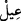
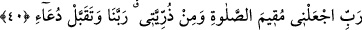

39. “İhtiyar halimde bana İsmail’i ve İshak’ı lütfeden Allah’a hamdolsun!
Şüphesiz Rabbim duâyı işitendir.”
“İhtiyar hâlimde” yâni, çocuğu olmaktan ümid kesmiş yaşlı biri olmama rağmen
“bana İsmâil’i ve İshâk’ı lütfeden Allah’a hamdolsun.”
İbrâhim (a.s.), kendisine verilen bu nîmetin ne kadar büyük bir şey olduğunu
göstermek ve şükrünü bildirmek maksadıyla İsmail ve İshâk’ın kendisine ihtiyarlık
çağında lutfedildiğini özellikle belirtmiştir. Çünkü ihtiyarlık çağı, kısırlık çağıdır.
İsmail (a.s.)’ın bu adı almasının sebebi şudur: İbrâhim (a.s.) Allah Teâlâ’ya kendisine
bir çocuk nasîb etmesi için yalvarırken: “π
İsma’ya Îl (Allahım beni işit) diye
duâ ediyordu. İbrânîce “
Îl” Allah demektir. Allah da bir çocuk ihsan edince ona
“İsmaîl” adını vermiştir. Nitekim Meâlimü’t-Tenzîl’de böyle geçmektedir.
İnsânü’l-uyûn’da ise şöyle der: İsmâil, İbranîce “
Mutîullah (Allah’a itâat
eden)” demektir. Rivâyete göre İsmail doğduğunda İbrâhim (a.s.) doksan dokuz
yaşındaydı.
Yine İnsânü’l-uyûn’da belirtildiğine göre İshak, İbrânîce bir isim olup ‘çok gülen’
demektir. Rivâyete göre İshak doğduğunda İbrâhim (a.s.) yüz on iki, İsmail ise on üç
yaşındaydı.
“Şüphesiz Rabbim” her şeyimin mâliki ve sâhibi, “duâyı işitendir.” kabûl
buyurandır.
Bu ifâde, bir kimsenin sözünü dikkate alıp önem verdiğinde söylenen: “Hükümdar
onun sözünü işitti.” sözünden alınmıştır.
Burada İbrâhim (a.s.)’ın kendisine çocuk nasîb etmesi için Rabbine niyâz ettiğine
işâret vardır. Nitekim başka bir âyette: “Rabbim, bana sâlih birini nasîb et.” (es-
Sâffât, 37/100) dediği bildirilmektedir. İşte Allah çok daha büyük ve göz nûru olacak
bir nîmet olması için çocuk olmasının ümid edilmediği bir zamanda İbrâhim (a.s.)’ın
duâsını kabûl buyurup istediğini kendisine bağışlamıştır.
40. “Ey Rabbim, beni ve soyumdan bir kısmını namazı devamlı kılanlardan eyle;
ey Rabbimiz! Duâmı kabûl et!”
“Ey Rabbim, beni ve soyumdan bir kısmını…”
İbrâhim (a.s.)’ın zürriyetinden bazısı için duâ etmesi, zürriyetinden bir kısmının kâfir
olacağını Allah’ın bildirmesi ile bildiği ve önceki milletlerde Allah’ın âdeti böyle
olduğu içindir. Bu ifâde, “Bu sözü ardından geleceklere devamlı kalacak bir mîrâs
olarak bıraktı.” (ez-Zuhuf, 43/28) âyetine zıt gibi görünmektedir.
“Namazı devamlı kılanlardan eyle” ta‘dîl-i erkâna riâyet edenlerden kıl ya da